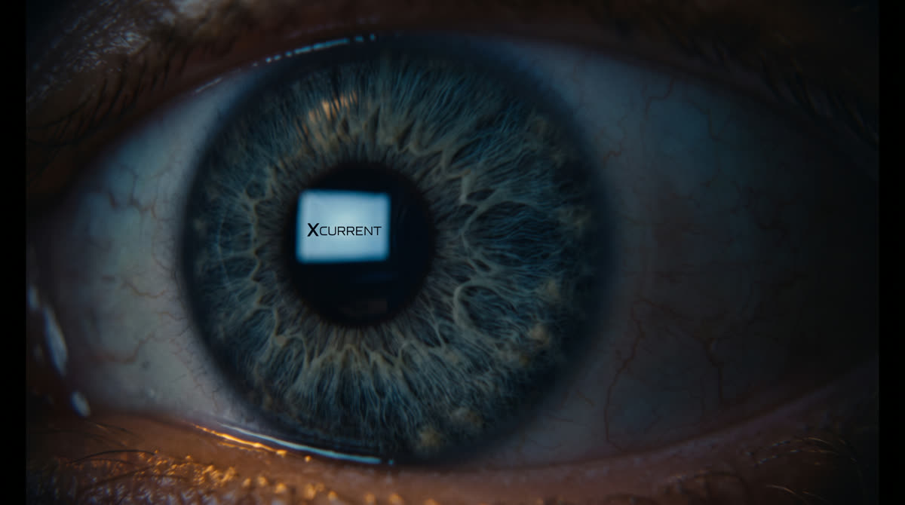
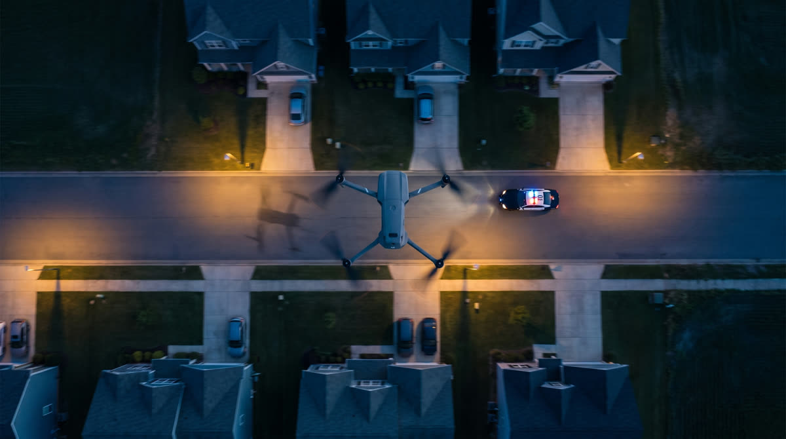
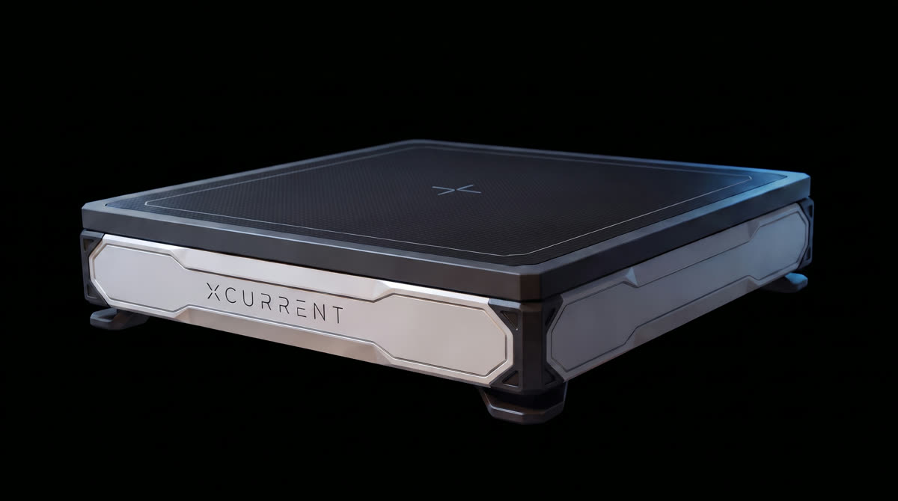

רצף 1 הקריאה
0:00 – 0:11.5

העין
העין עצומה, נפקחת בבת אחת, הלוגו נפרש על העין, והמבט נע הצידה אל הרעש שמלמטה.

המסדרון
מדרגות יורדות לחושך, אור חמים עולה מלמטה. פוש אין איטי.

הקריאה
יד נשלחת אל הטלפון. חיוג. חיתוך חד.

מוקד החירום
הקריאה מתקבלת.
02:47 AM · Emergency call receivedרצף 2 החמ"ל בוחר, מאשר, משגר
0:11.5 – 0:27.5
ארבע תחנות XPAD
נקודה אדומה פועמת על הבית
הרשת על המסך
ליד כל תחנה: מה עומד עליה, סוג הרחפן, ומצב המוכנות.
Network status: 4 stations, 22 pads ready · Intrusion detectedכרטיס המשטח נפתח
בחירה ואישור
המוקדן בוחר את הרחפן שמתאים למשימה ומאשר שיגור.
Pad 07 selected · Charge 100% · Launch authorized by command
השיגור מגג תחנת הכיבוי
הרחפן שנבחר מתרומם. השאר נשארים על המשטחים שלהם, מוכנים.
Unit dispatched, en route
בדרך לזירה
טופ שוט. הרחפן חוצה את הפריים מעל השכונה ועוקף את הניידת שמתחתיו.
מתחיל לרוץ
זמן השהייה
המנגנון שיחזור לאורך כל הסרט.
Endurance remaining 00:42רצף 3 הרחפן בזירה
0:27.5 – 0:41.5

הגעה לבית
הרחפן מגיע ומקיף את הבית מבחוץ. הדלת הקדמית פתוחה למחצה.

תמונת מצב חיצונית
החצר, הכניסות, רכב חונה. הפיד מגיע לחמ"ל ולניידת בו זמנית.
Live feed · Perimeter observed · Front entry, open
בתוך הניידת
המסך תופס חצי פריים, כדי שאפשר יהיה לקרוא אותו גם בטלפון.
שכבות הניתוח נפתחות
זום אין רך
הניתוח
הסימון והניתוח נעשים במערכת השליטה של המשטרה.
רצף 4 חילוף מתוכנן מראש, בלי רגע אחד בלי כיסוי
0:41.5 – 1:03.5
מתקרב לסף
המערכת מזמינה מחליף
החילוף מוזמן מראש
בזמן שעוד יש מרווח.
Endurance remaining 04:10 · Relief scheduled
מערך שישה משטחים על גג המרפאה
חמישה רחפנים מדגמים שונים, כל אחד על המשטח שלו, כל אחד עם נתוני הסטטוס שלו.
Platform agnostic, any drone
המחליף מתעורר
נורות הסטטוס נדלקות אחת אחרי השנייה, המדחפים מתחילים להסתובב.
Relief airborne
המראה מהמערך
אחד יוצא, השאר נשארים על המשטחים שלהם.

החפיפה
שני רחפנים באוויר יחד באותו פריים. הראשון עוזב רק אחרי שהשני מיוצב.
Overlap confirmed, coverage continuous
חזרה למשטח
הרחפן הראשון נוחת על המערך, לצד הרחפנים שכבר עומדים שם.
Return to selected pad · Landed
מגע והעברת מידע
המידע עובר בשני הכיוונים ברגע שהרחפן יושב.
Data downlink · New tasking uploaded · Readyרצף 5 אותה תשתית, על פלטפורמה ניידת
1:03.5 – 1:16.5

הכוח מגיע
הרכב עוצר, הדלת האחורית נפתחת.

XPAD Mobile
הכלב יורד, ועל גבו עריסה עם רחפן קטן טעון. המצלמה על העריסה.
XPAD Mobile
חצי חוג סביב העריסה
סיבוב 180 תוך כדי תנועה.
Drone ready, 100%
הרחפן הקטן נכנס
ממריא ישירות מגב הכלב ונכנס אל הבית דרך הדלת הפתוחה.
Aerial asset deployed · Entering structureרצף 6 זיהוי, מעצר, חזרה למוכנות, סגירה
1:16.5 – 1:46.5

הזיהוי מבפנים
הפעם הראשונה שרואים אותם מקרוב, דרך מצלמת הרחפן הקטן.
Suspects identified: 2 · Resident: 1
הם מבחינים
רגע ההפתעה. הם פונים לברוח.

המעצר
מהגב, ידיים מורמות, המולת הכוחות סביבם.
Suspects in custody
טעינה
רחפן התצפית יושב על המערך ומתחיל להיטען.
Charging
הרחפן הקטן חוזר
חוזר אל העריסה שעל גב הכלב, נעילה נסגרת, מתחיל להיטען.

Sleep mode
הנורות נכבות אחת אחרי השנייה. רדום ומוכן למשימה הבאה.
Charging complete · Sleep mode · Ready for next mission
העיירה
דולי אאוט שנפתח מהבית אל העיירה כולה. משטחים על גגות לאורכה, וקווים נמתחים ביניהם לרשת אחת.
Persistent air coverage · Autonomous energy network
המוצר · סיבוב 360
שוט הסיום. סיבוב מלא סביב ה-XPAD Flex 100, ותוך כדי הסיבוב נפתחות סביבו שכבות מידע.
+ טאגליין
סגירה
One Infrastructure. Every Mission. Always Ready.